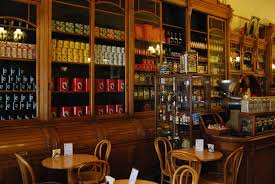

Nuestra Historia
Más de 95 años compartiendo aromas, cultura y tradición en Buenos Aires.

Desde 1927
Café Gato Negro forma parte de la identidad cultural de Buenos Aires. Nació como un espacio dedicado a los amantes del café, el té y las especias, convirtiéndose con el paso de los años en un punto de encuentro para generaciones.
Su ambiente tradicional, sus aromas únicos y la calidad de sus productos han transformado al café en un verdadero referente gastronómico y cultural.
1927
Fundación del café.
1950
Incorporación de especias importadas.
2000
Patrimonio histórico de Buenos Aires.
2025
Referente gastronómico y turístico.
95+
Años de historia
50+
Variedades de té y especias
1000+
Clientes por mes
"Cada rincón guarda una historia, cada aroma un recuerdo."